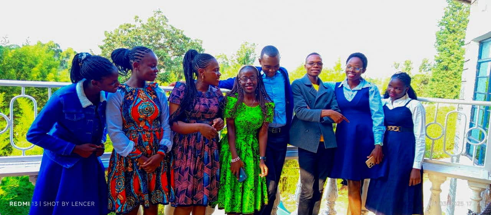

About Alpha Music Team
Alpha Music is a gospel music team birthed in 2022 a family of believers growing in truth, united in fellowship, and passionate about using our gifts for God’s glory. We exist to learn sound doctrine, walk together in love, worship with purpose, and reach the world with the gospel of Christ:A family being formed by Christ, for Christ. Founded by Mark Wycliffe Omollo, Alpha Music Team is a collective of talented gospel musicians united by faith and harmony. We believe in the power of worship to transform lives, uplift spirits, and glorify God through every song.
Our Journey
2022 - Formation
Alpha Music Team began with a small group of passionate worshipers in The University of Nairobi.
2023 - First Album Release
Released "Nitie Duol", gaining popularity across churches in Kenya.
2023 - Online Worship Series
Launched our YouTube channel.